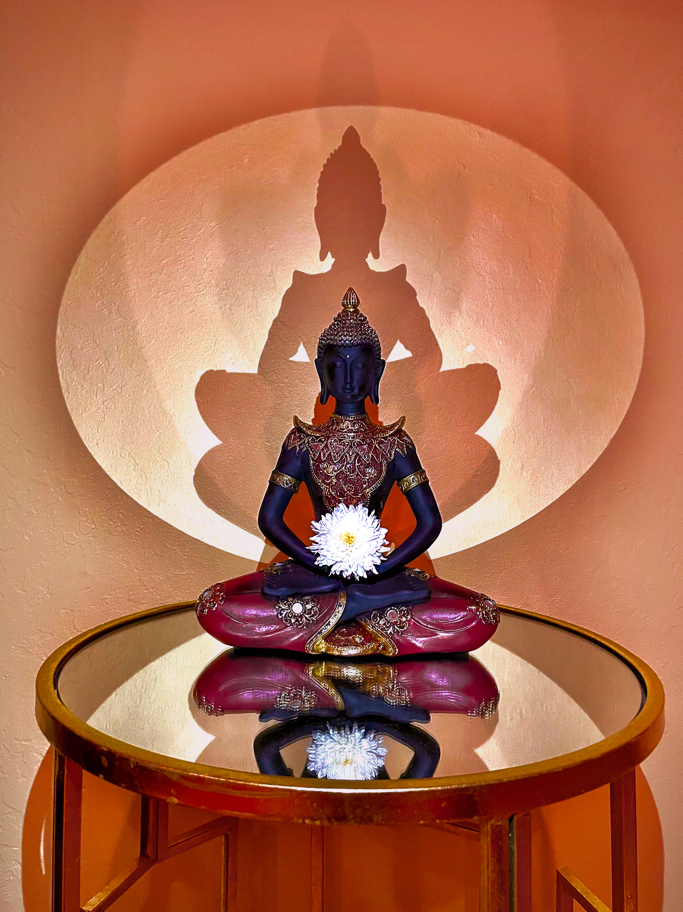

The Protector
Buddha was a teacher who preached peace and preservation of one’s mental, physical, emotional, and spiritual being. The shadow in the background acts as a guiding figure, depicting the teachings of Buddha. The actual statue itself represents the protector that nurtures and supports all living beings, illustrated by the delicate flower. The oval aura shows wisdom and enlightenment. The light in the reflection adds to this positivity depicting awakening and freedom from suffering.